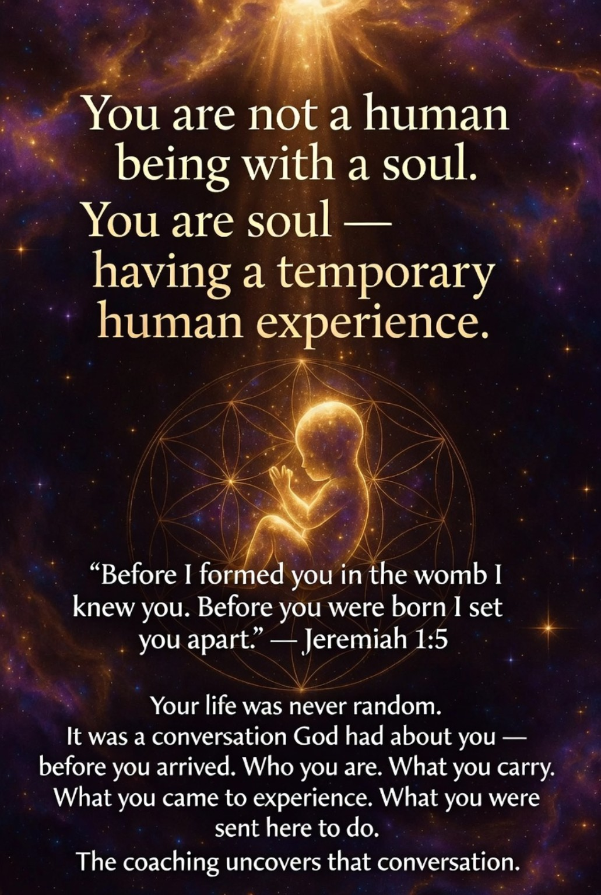
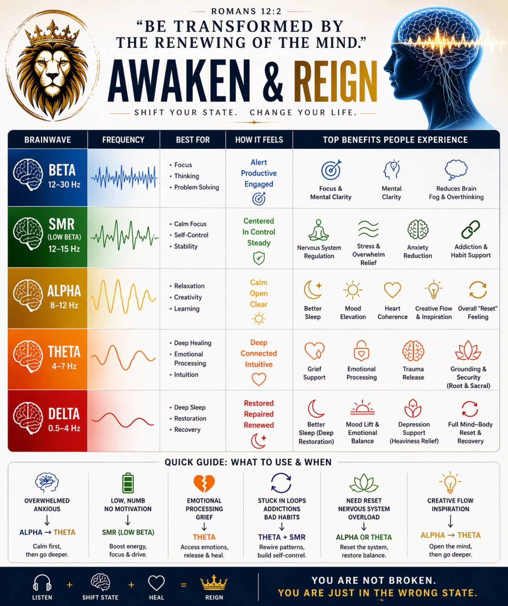
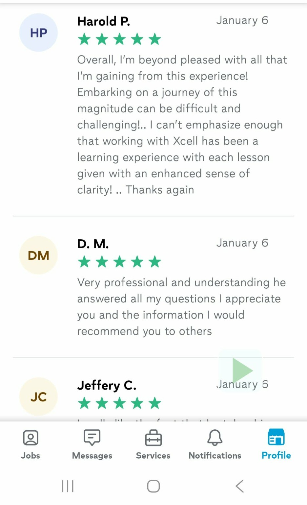
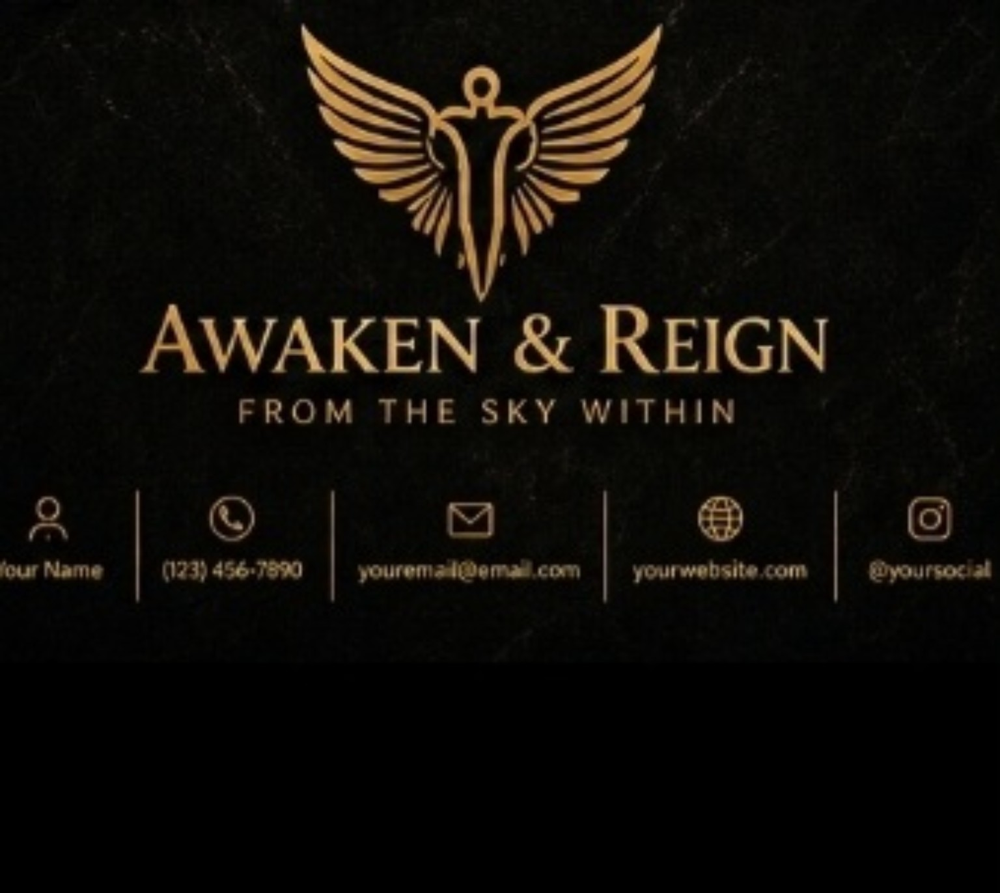

“I felt my nervous system finally slow down for the first time in years.”
Session Experience
From the Sky Within
AWAKEN & REIGN
STUDIOS
Life Coaching • Nervous System Reset • Brain Entrainment • Vibroacoustic Therapy • Music Healing



Nervous System Reset
The Body Comes Back To Safety First
The vagus nerve connects the brain, heart, lungs, gut, and emotional regulation system. When the body leaves survival mode, clarity, rest, repair, and restoration become easier to access.
Learn More
The vagus nerve is one of the most important communication pathways in the body. Chronic stress, emotional overload, trauma, anxiety, or survival-mode living can leave the nervous system dysregulated. This may show up as anxiety, sleep issues, brain fog, overwhelm, emotional heaviness, or difficulty relaxing. The goal is helping the body shift from fight-or-flight into a calmer, restorative state where healing becomes possible.

Identity & Alignment
Blueprint Reading
This work helps uncover core identity, gifts, purpose, emotional patterns, relationship dynamics, blocks, and the healing path that fits how you are wired.
Learn More
The Blueprint Reading is not traditional astrology. It uses ancient pattern recognition methods involving elements, animals, seasons, energetic patterns, and personality wiring. The purpose is self-understanding, not prediction. The reading is combined with your real life experiences, emotional blocks, nervous system patterns, and goals to guide personalized recommendations for coaching, brain entrainment, vibroacoustic therapy, emotional processing, creative expression, and alignment.

Light + Sound
Brain Entrainment
Guided light and sound frequencies help shift the brain from stress, overwhelm, and mental noise into calmer states connected to clarity, focus, deep relaxation, and restoration.
Learn More
Brain entrainment uses selected frequencies of sound, rhythm, and light stimulation to encourage the brain to shift into different brainwave states. Visual light stimulation uses rhythmic pulses through the eyes and optic pathways. Binaural tones use slightly different tones in each ear, and the brain responds to the difference between them. These sessions may support stress reduction, relaxation, focus, emotional processing, nervous system regulation, and restorative states.



Optional Add-On
Music & Vocal Expression
Creative expression can become a powerful form of emotional release. Sometimes healing begins when what was trapped internally finally finds expression.

Real Experiences
What People Are Experiencing
“The vibroacoustic session felt like my body remembered how to relax.”
Session Experience“I left feeling mentally lighter, emotionally calmer, and physically reset.”
Session Experience
Ready To Begin?
You are not broken.
You may just be in the wrong state.
Whether you are seeking clarity, emotional release, nervous system restoration, deeper self-understanding, or personal transformation — this work is designed to help you reconnect with who you truly are.
Cash App: $Xcellblueprint
